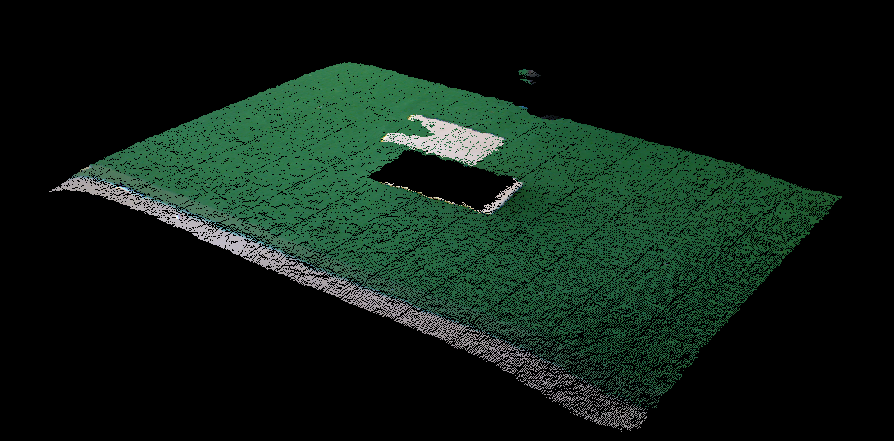
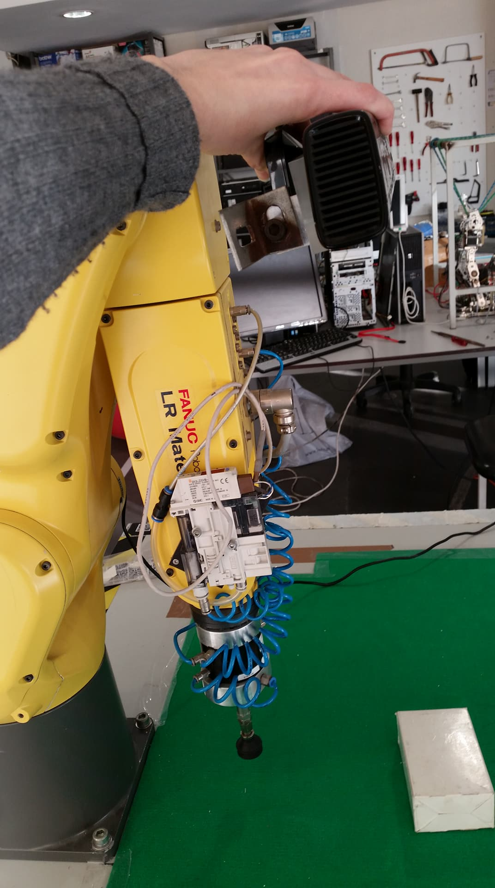
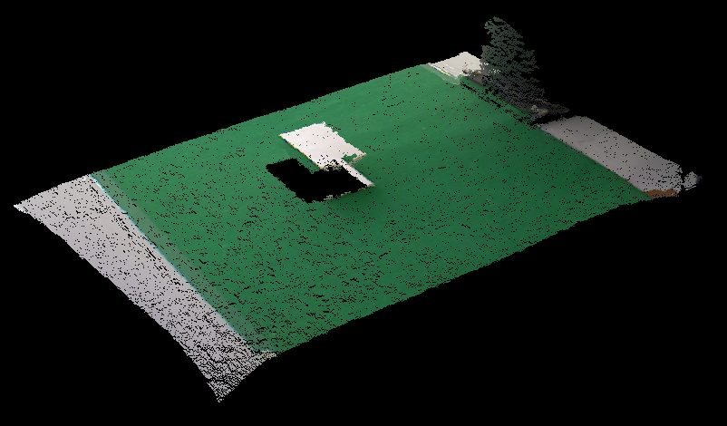
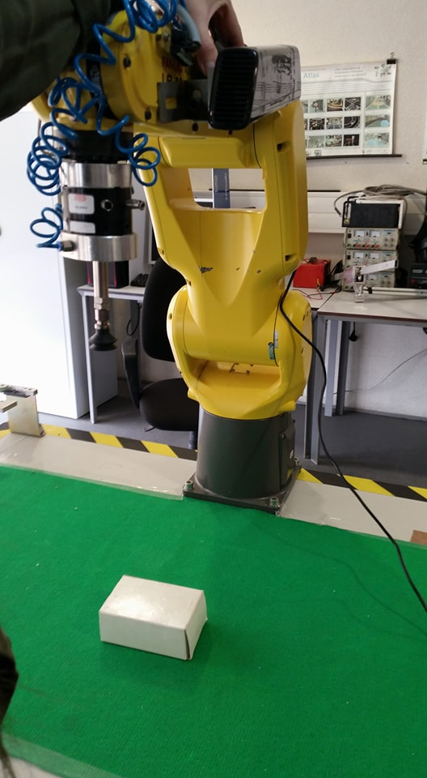
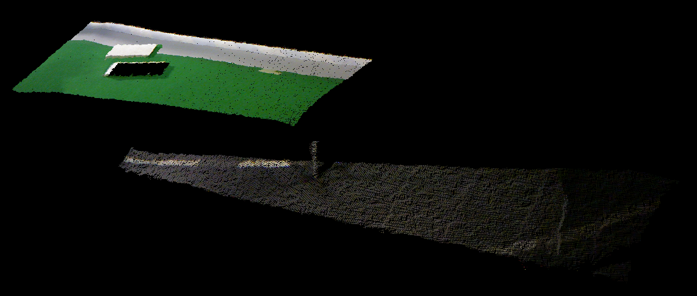
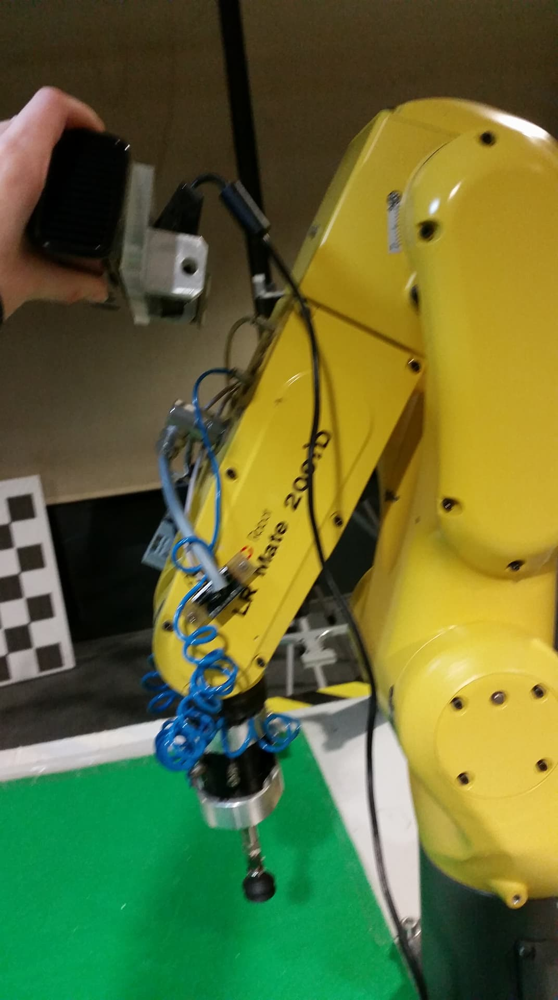
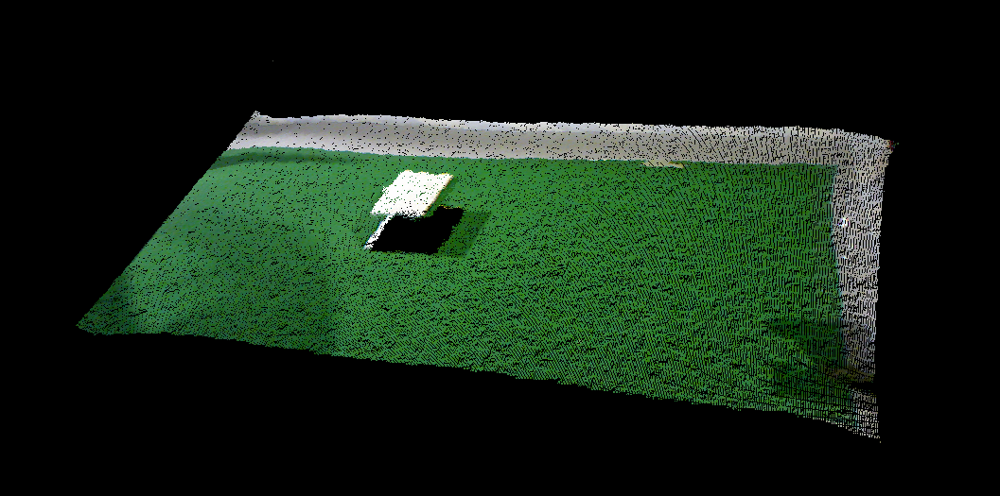
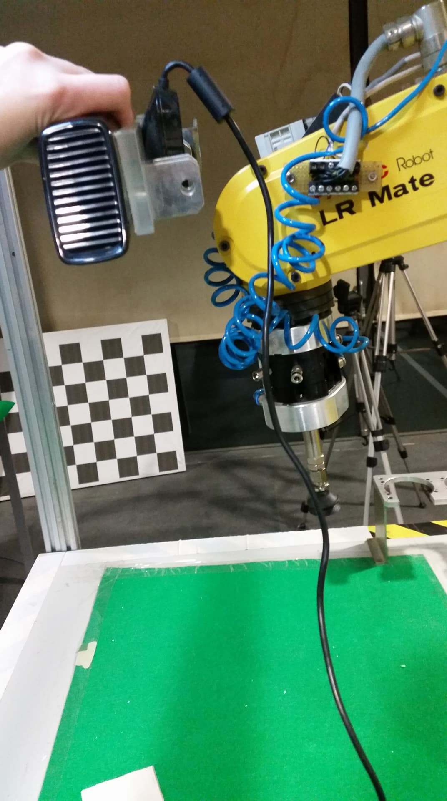
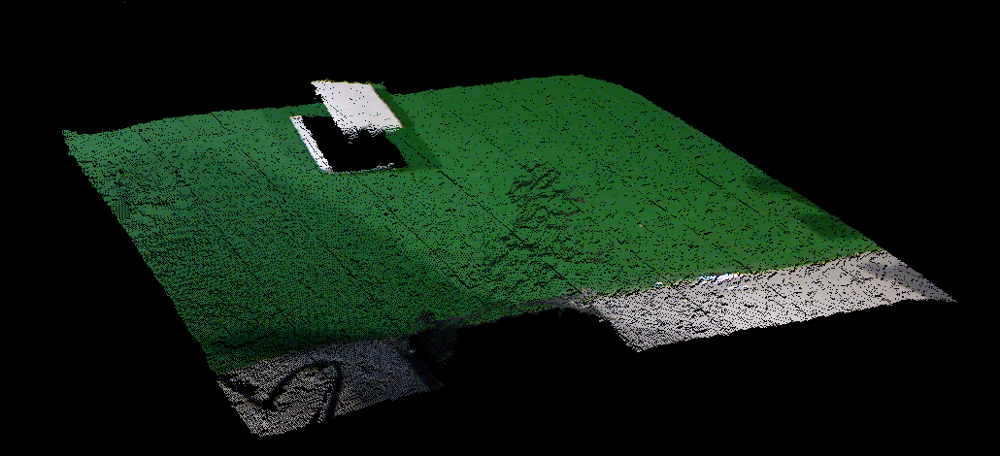
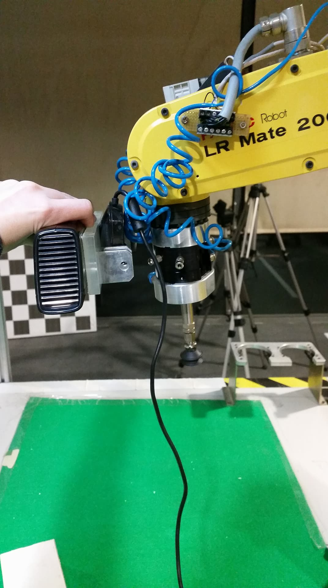

This week I started with some research on the various applications of bin-picking in the industry nowadays and continue reading other academic papers on the different processes utilized to segment the point clouds acquired by the RGB_D sensors. I also tudied some algorithms utilized for object detection and for filtering point clouds used in the Point Cloud Library.
Apart from this, these week was specially marked by some developments on the installation of the hardware and acquisition and processing of data.
KinectIn order to decide the correct position to install the Kinect, I recorded some frames for the different possible positions of the sensor on the robot, which are represented next.
Point Cloud 1 - Kinect with 3 degrees of freedom.
|  |  |
Point Cloud 2 - Kinect with 4 degrees of freedom on the side of the robot.
|  |  |
Point Cloud 3 - Kinect with 4 degrees of freedom closer to the 4th joint of the robot.
|  |  |
Point Cloud 4 - Kinect with 4 degrees of freedom closer to the 5th joint of the robot.
|  |  |
Point Cloud 5 - Kinect with 6 degrees of freedom.
|  |  |
Afterwards I began to segment the point cloud 2, for the detection of a simple object, a box, and created a launch file to run all the necessary programs for the visualization of the results. I started by eliminating parts of the point cloud, in order to simplify and keep only the points that represent the objects. The filters used where the follow:
- PassThrough filter - used to identify and/or eliminate points within a specific range of X, Y and Z values.
- VoxelGrid filter - used to simplify the cloud, by wrapping the point cloud with a three-dimensional grid and reducing the number of points to the center points within each bloc of the grid.
I wrote and uploaded the code in the Arduino UNO to send the distance read by the sensor through the serial port.
const int analogInPin = A0; // Analog input pin float sensorValue = 0; // Value read from the sensor float DistanceSENSICK; void setup() { // initialize serial communications at 9600 bps: Serial.begin (9600); } void loop() { //--------SENSIK-------- // read the analog input value: sensorValue = analogRead(analogInPin); DistanceSENSICK=-1.0708*sensorValue+831.96; // print the Distance to the Serial Monitor: Serial.print(DistanceSENSICK); Serial.print("\n"); }
Since the output signal of the sensor is not a distance in a scale of meters, it has to be converted by a linear regression, which can be seen in the code above. To determine this equation it is necessary to gather some values of the sensor readings and its corresponding distance, and plot the best regression.
Moreover, I started a C++ course to learn in which ways this programing language differs in comparison with C.